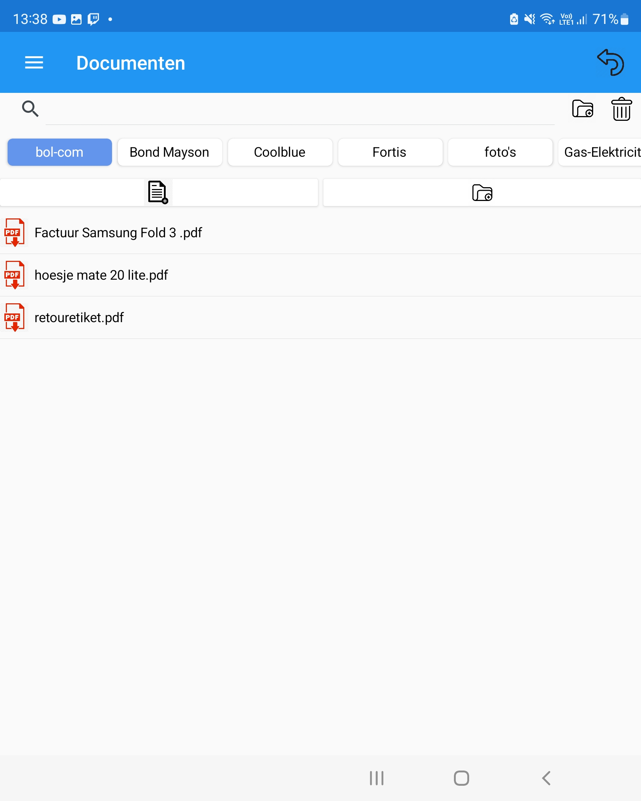

Documenten app
Met deze app wou ik meer experimenteren met files. Deze app communiceert d.m.v sockets die communiceren over tcp naar mijn server thuis.
Zo kan ik gemakkelijk foto's en documenten aanmaken en opslagen.

Navigatie
Je hebt bovenaan een zoekbalk om files te zoeken. Rechts naast de zoekbalk heb je knoppen voor een nieuwe hoofdmap aan te maken.
En een knop voor mappen of bestanden te deleten.
Onderaan de zoekbalk heb je een zijwaartse scroll balk waar de hoofdmappen in staan.
Als je daar op drukt krijg je alle files te zien dat ik heb geüpload.
Met de 2 knoppen daaronder kan je files toevoegen en rechtstreeks een foto maken die wordt direct geüpload naar mijn server.
De knop rechts daarnaast kan je nog een submap aanmaken.
